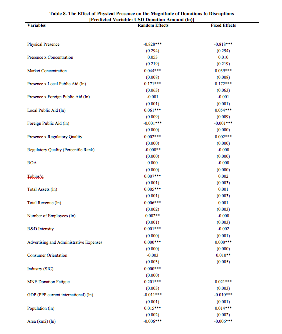
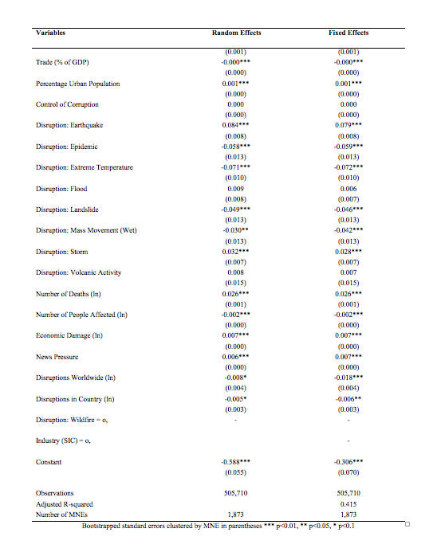

Is it the Social Pressure Coming from Local Presence?
? Neo-institutionalism centers on the argument that firms are embedded in societal arrangements that foster their cognitive membership to communities (Marquis, Davis, and Glynn, 2013). Hence, a normative pressure on the organization exerts a particular influence in the philanthropy of the geographically proximate organization (Zhang and Luo, 2013). MNEs may donate to achieve the approval of the local community [i.e., social license to operate (Boutilier and Thomson, 2011; Wilburn and Wilburn, 2011)]. The physical presence of the organization may be a simpler explanation and economic importance would be a second-order measure captured by differentiating firms based on geographic presence. We tested this idea using the binary variable physical presence taking value “1” when the firm has any type of affiliate in the focal country. Results in Table 8 suggest that the mechanism driving this form of corporate non-market behavior is more complex than local presence alone and that the measure of economic importance better captures such complexity.

